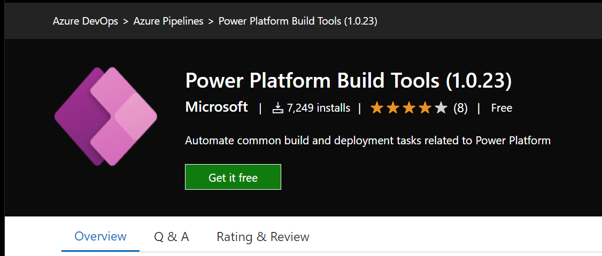
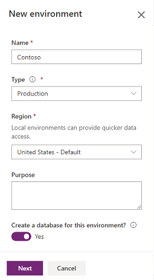
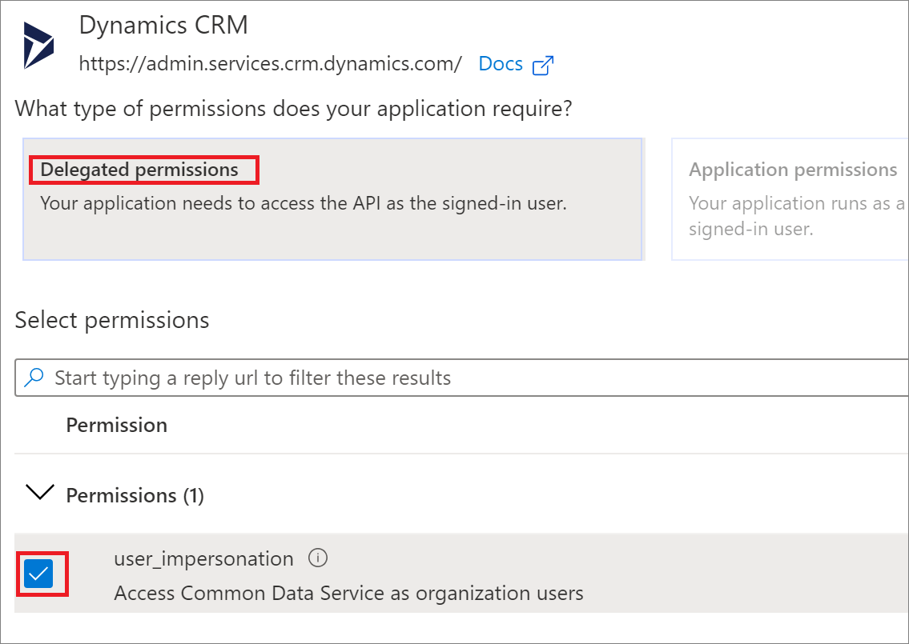
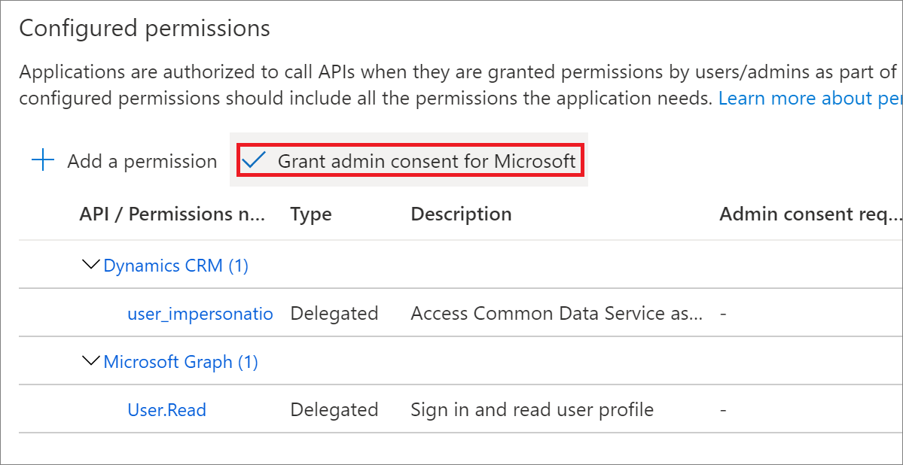
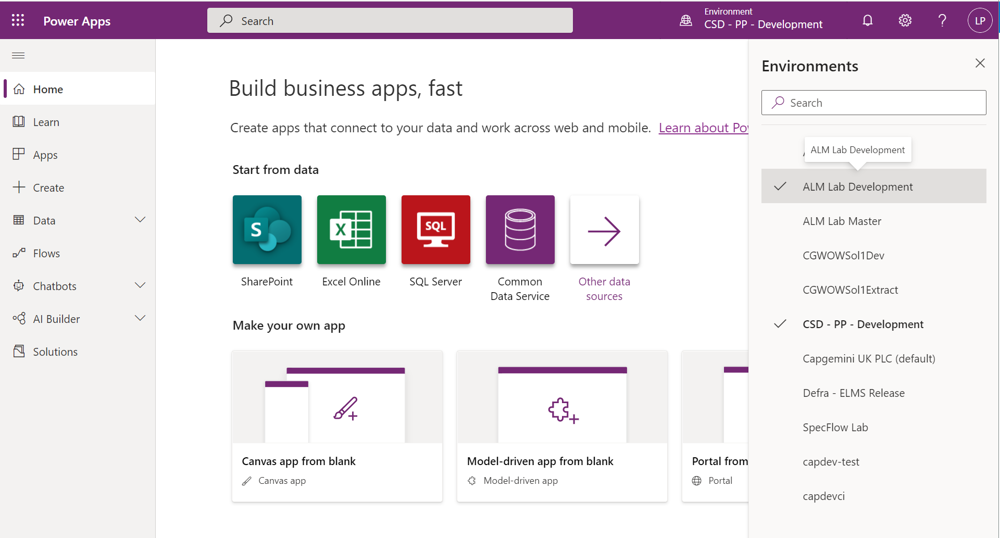
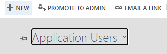
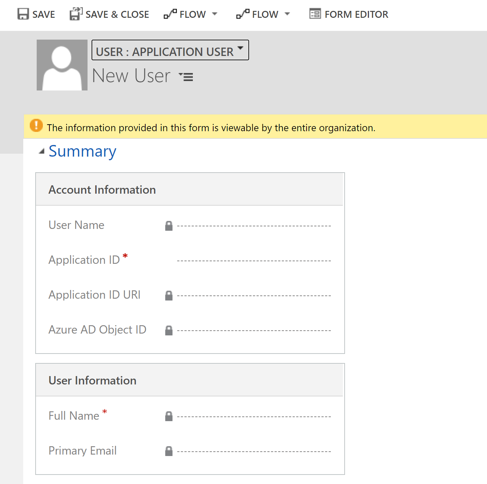

What you'll build & learn
This lab gives you a hands-on walkthrough to setup several Power Platform environments for use with development hub. You will:
- use the power platform admin centre to create 3 environments (development, extract and continuous integration)
- use Azure Active Directory to create an application user
- register the new user across the 3 power platform environments with System Administrator rights
Prerequisites
- Dynamics 365 admin, Global admin, or Power Platform admin to a PowerApps tenant
- Dynamics 365 Admin or Power Platform Admin to create instances
- Global Admin is only required if you want to configure Exchange integration and approve email accounts
- Azure DevOps organisation created with a project created
- Preferably you will request your account have Project collection administrator access in Azure DevOps but as most Azure DevOps instances are hosted by clients they are sometimes reluctant to grant you this permission. This permission is required to enable you to install the required third-party extensions to Azure DevOps that are consumed by our tooling. If you struggle getting these permissions at a minimum you will need Project administrator access for an Azure DevOps project so you can request the extensions to be installed by a Project collection administrator.
Project collection administrator access is required to install the following tools without approval, if not possible then Project administrator will allow you to request these tools be installed to an Azure DevOps organisation:
Important: Only required if you only have Project administrator access to Azure DevOps
Open Power Platform Build Tools
Select Get it free

You'll then be prompted to Select an Azure DevOps organization. Select your Azure DevOps organisation and select Request

Repeat this step for Sarif Viewer Build Tab
Open up the ‘Power Platform admin center' as an admin (Dynamics 365 admin, Global admin, or Power Platform admin).
If not automatically re-directed, navigate to Environments in the left-hand pane
Click New
 You will then be prompted to enter the following details:
You will then be prompted to enter the following details:
Field | Value |
Name | {Project name}Development e.g. ALMDevelopment |
Type | Sandbox |
Region | United Kingdom - Default |
Purpose | Include project name and reason for creating the environment e.g. ALM for MACE |
Create a database for this environment | Yes |
Select Next to move onto next set of fields 
Field | Value |
Language | English |
URL | [Project name][environment name] e.g. MACEALMDevelopment |
Currency | GBP (£) |
Enable Dynamics 365 Apps | Project dependent but for lab leave as **No** |
Deploy sample apps and data | No |
Security group | Not applicable |

Select Save Repeat steps above for the below two environments swapping out the details as necessary:
Master
Field | Value |
Name | [Project name]Master e.g. ALMMaster |
CI
Field | Value |
Name | [Project name]CI e.g. ALMCI |
Important: note down the URLs of all environments created into a text tool such as notepad as these will be used later on in the lab.
Why?
The application in Azure Active Directory gives our development tooling, primarily Azure DevOps and Development Hub, the ability to talk to Dynamics 365. It enables:
- Development Hub to extract and import solutions across environments
- Allows to call Microsoft's Solution checker for the Power Platform in an Azure DevOps build to verify the quality of a solution
Setup
Navigate to Azure Active Directory
From the left panel, choose Azure Active Directory > App registrations
Choose + New registration

In the Register an application form provide a name for your app such as DevOps User, select Accounts in this organizational directory only, and choose Register. A redirect URI is not needed for this walkthrough and the provided sample code.

On the Overview page, select API permissions
Choose + Add a permission
In the Microsoft APIs tab, choose Dynamics CRM
In the Request API permission form, select Delegated permissions, check user_impersonation, and select Add permissions

On the API permissions page select Grant admin consent for "org-name" and when prompted choose Yes

Important: Select Overview in the navigation panel, record the Display name, Application (client) ID, and Directory (tenant) ID values of the app registration. You will use these later in the lab.
In the navigation panel, select Certificates & secrets
Below Client secrets, choose + New client secret to create a secret
In the form, enter a description and select Add.
Important: Record the secret string. You will not be able to view the secret again once you leave the current screen.
Open the Maker Portal.
Select the current environment (in the screenshot this is ‘CSD - PP - Development') in the banner on the top right-hand side of the page and choose your Dataverse environment

Once you're in the right environment, choose the cog icon for Settings and select Advanced settings

Navigate to Settings > Security > Users.
Change the view filter to Application Users by selecting Enabled Users and choosing Application Users
Select + New.

Change the Dynamics form by selecting User and choosing Application User
In the Application ID field, enter the Application ID (Client ID) of the app you registered earlier in Azure Active Directory which you also copied to a notepad and select SAVE
After selecting SAVE, if all goes well, the User Name, Application ID URI, Azure AD Object Id, Full Name, and Primary Email fields will auto-populate with correct values
Before exiting the user form, choose MANAGE ROLES and assign the System Administrator security role.

Click OK
Repeat this (Application user creation) step for the other two Power Platform environments you created earlier on:
- [Project name]Master
- [Project name]CI